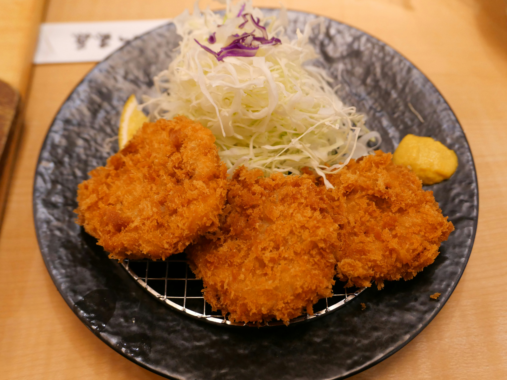

Wagyu Ricebox
The wagyu rice box stands out as a premium expression of Japanese cuisine, combining simplicity with indulgence. Thinly sliced wagyu beef is typically grilled or seared just enough to render its rich marbling, creating a buttery texture that almost melts upon contact. The flavor profile is deeply umami, slightly sweet from the marinade or tare sauce, and balanced by the neutral warmth of steamed rice beneath it. Texturally, the contrast between the tender beef and the soft, slightly sticky rice enhances the overall experience. Its appeal lies in how it elevates a basic rice dish into something luxurious while still maintaining the clean, minimalistic philosophy characteristic of Japanese cooking.
Tonkatsu
Tonkatsu delivers a satisfying combination of crunch and juiciness, making it a staple comfort food in Japan. It consists of a thick cut of pork, breaded with panko crumbs and deep-fried until golden brown. The outer layer provides a crisp, airy crunch, while the interior remains tender and moist. The flavor is relatively mild on its own but becomes more complex when paired with tonkatsu sauce, which adds a tangy, slightly sweet depth. Often served with shredded cabbage and rice, the dish balances heaviness with freshness. Its strength lies in its straightforward preparation and reliable texture contrast, which consistently appeals to a wide range of preferences.


Ramen
Ramen is a highly versatile dish that showcases depth and variety within Japanese cuisine. It features wheat noodles served in a flavorful broth that can range from light and clear to rich and creamy, depending on the base such as shoyu, miso, or tonkotsu. The taste experience is layered, combining savory broth, springy noodles, and toppings like sliced pork, soft-boiled eggs, and green onions. Texturally, ramen offers a dynamic mix between the chewiness of the noodles and the softness or richness of the toppings. Its popularity stems from its adaptability and the way each component contributes to a balanced yet complex bowl, making it both comforting and customizable.